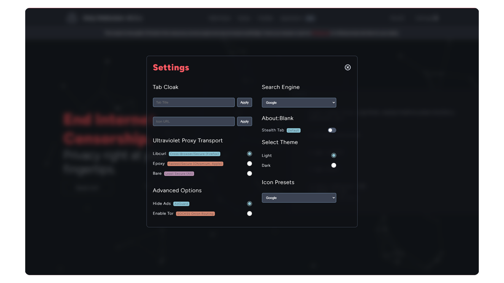
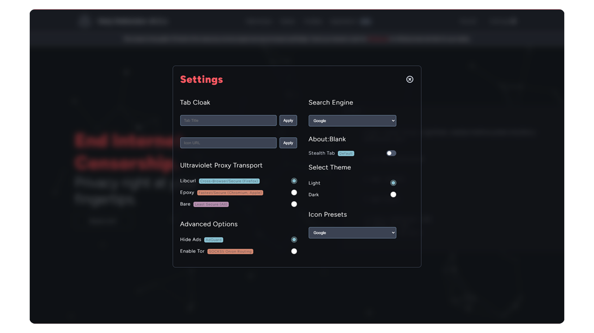
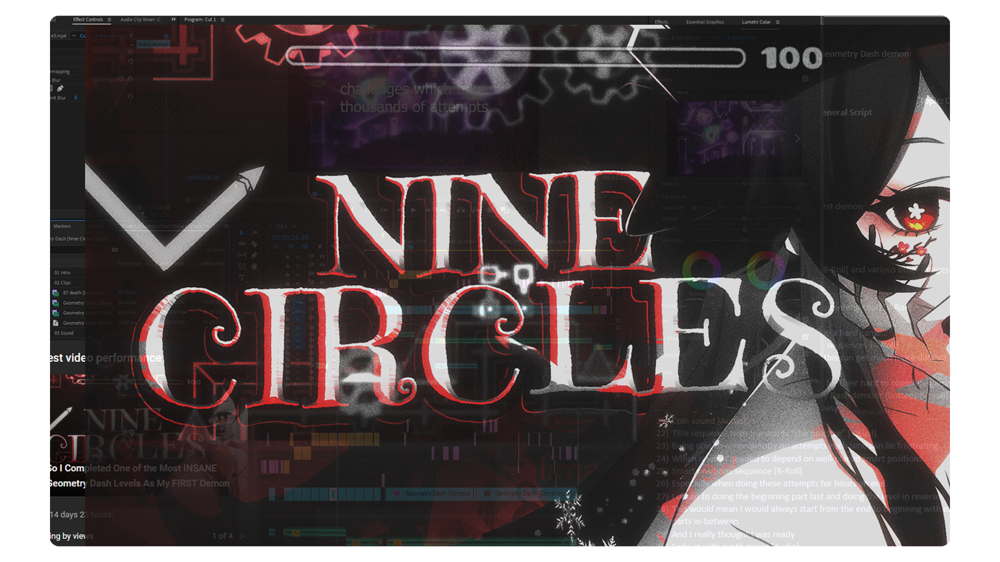

/ Projects /
- Video Production | VFX/Editing | Open-Source Development -

-
 

Holy Unblocker LTS
- Web Proxy Service -
- (2020-2024) -
I've worked on this project for over four years now. This project has had over 1.3 million lines of code changed, 21 contributors and over 1500 commits done.
Holy Unblocker LTS is a web proxy service that helps you access websites that may be blocked by your network or policy extensions all within your browser with no download or setup. It does this securely and with additional privacy features. This project regularly updated and places a strong emphasis on design, mechanics, and features.
During its peak usage, Holy Unblocker attracted over 1 million unique users per month and received more than 10 million views per month.Web Service: https://holyunblocker.org
GitHub: https://github.com/QuiteAFancyEmerald/Holy-Unblocker
-

Slate Desktop for Windows 11
- Windows Environment CLI -
- (October 2024) -
Slate Desktop is a powerful Windows environment and CLI tool focused on performance, productivity enhancements, shell modifications, and a modern aesthetic tailored specifically for Windows 11. Unlike other modpacks that revert to outdated styles, Slate Desktop elevates the sleek, modern look of Windows 11 with performance and visual improvements.
One of the core principles of this project is full transparency—it avoids hidden automation, untrusted applications and the use of untrusted, pre-modded ISOs. Instead, Slate Desktop employs a seamless, CLI-based process to download assets and automatically import necessary configurations via a sources.json file. This ensures that each component of the setup is openly visible and customizable.
I've messed around with Windows 11/10 modding for a few years now and finally decided to assemble a collection of popular tools I've used to optimize/design my system.Deviant Art: https://www.deviantart.com/quiteafancyemerald/art/1106725305
GitHub: https://github.com/QuiteAFancyEmerald/Slate-Desktop-for-Windows-11
-

I CREATED A Cinematic Anime Trailer
- Cinematic Editing/Compositing -
- (April 2023-2024) -
This was a massive project I worked on for almost a year despite it being only four minutes long. It marked a huge leap in editing skills, composition style and colorgrading.
Every single clip has some sort of composting done via color, camera movement or sound design. Sound was the biggest experiment for this video I really tried to focus on that "cinematic" feel by actually working on sound first before visuals.
The video currently sits at 17K views. -

Nine Circles Video
- First Edited Video -
- (2022) -
This project marked my start into video editing. It was a challenging but enjoyable process, and I used MagicHDR for the "RTX" visual effects and stock Premiere Pro for everything else.
The final result was successful thanks to the combination of transitions, music, and visual effects. Thumbnail by sedex!
The video currently sits at 70K+ views.
To be updated with more completed (and good) projects!